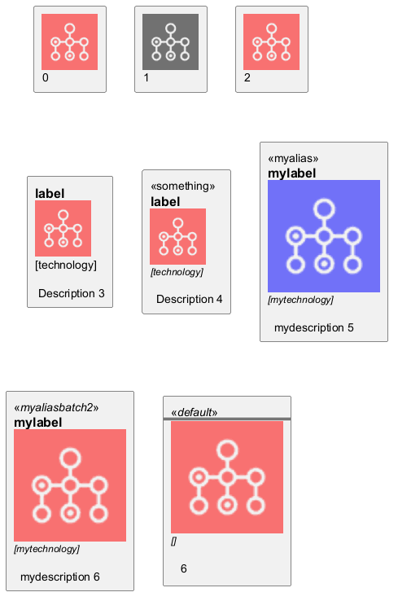

@startuml
'create equivalent of icons shown here https://github.com/awslabs/aws-icons-for-plantuml
sprite $Batch [64x64/16z] {
xLQ7bjim30CdzFzVtEV1iErPkJpT7iYm5aWDKERujFZ5Bp8YkSvM011VfMzSDy2Mw1JidbCGAtmllmbPuIkoImjyGUsyBV4LV95_Xny50bpW4uTRAjOKu81b
Xa0vbX3OKFG5C0IMNLyxXA_3PvW5hqHSOFBP_Ovk4036hYi0pJdTCgqD6A0g4FQ0hOwygxSikGOanw11AuvtomxXjNiRDECmn21xxTkJP0N4tdy1Gmu5T2GW
6ygFL_sqbx3NvA_FVtt_ri_F1CZNra-10TpNhvVr2KGcyVCOdoBySlpv-jC1ZSVveO36_Fwb0UASqGqG0QpfJgP2Eo60u59-fLVozhhdNk2WTeDpq2O6AAL_
uV7KGPNO2lya17gz1pMiD1VmFNH9IBLNe3xA3q07eNsMy_WdXESwU4jRmddEk-FUuPFjjthiqAEGVUz8rlqmsK1nhtYlklvp7vWRfka0jUNITUdTzgxFyzLx
-Ikh_YdmYr_y0G
}
rectangle "<color:red><$Batch></color>\n0" as rectangle
!procedure $ffoo1()
rectangle "<$Batch>\n1"
!endprocedure
$ffoo1()
!procedure $ffoo2()
rectangle "<color:red><$Batch></color>\n2" as 2
!endprocedure
$ffoo2()
'https://github.com/awslabs/aws-icons-for-plantuml/blob/master/dist/General/Disk.puml
'rectangle "==e_label\n<color:e_color><$e_sprite></color>\n//<size:TECHN_FONT_SIZE>[e_techn]</size>//" <<e_stereo>> as e_alias
'!define DiskParticipant(p_alias, p_label, p_techn, p_descr) AWSParticipant(p_alias, p_label, p_techn, p_descr, #232F3E, Disk, Disk)
'https://github.com/awslabs/aws-icons-for-plantuml/blob/master/source/AWSCommon.puml
'common.puml: rectangle "==e_label\n<color:e_color><$e_sprite></color>\n//<size:TECHN_FONT_SIZE>[e_techn]</size>//\n\n e_descr" <<e_stereo>> as e_alias
!procedure $ffoo3()
rectangle "==label\n<color:red><$Batch></color>\n[technology]\n\n Description 3" as 3
!endprocedure
$ffoo3()
!procedure $ffoo4()
rectangle "<<something>>\n==label\n<color:red><$Batch></color>\n//<size:12>[technology]</size>//\n\n Description 4" as 4
!endprocedure
$ffoo4()
!procedure $ffoo5($alias, $description="", $label="", $technology="", $scale=1, $colour=red)
'OBSERVATION 1: the next line does not work - sprite is white - not red
rectangle "<<$alias>>\n==$label\n<color:$colour><$Batch*$scale></color>\n//<size:12>[$technology]</size>//\n\n $description 5" as 5
'the next line works i.e. sprite is red
'rectangle "<<//$alias//>>\n==$label\n<color:red><$Batch*$scale></color>\n//<size:12>[$technology]</size>//\n\n $description 5" as $alias
!endprocedure
$ffoo5("myalias", "mydescription", "mylabel", "mytechnology", 2, "blue")
!procedure $ffoo6($alias="default", $description="", $label="", $technology="", $scale=1, $colour=red)
rectangle "<<//$alias//>>\n==$label\n<color:red><$Batch*$scale></color>\n//<size:12>[$technology]</size>//\n\n $description 6 " as $alias
!endprocedure
$ffoo6("myaliasbatch2", "mydescription", "mylabel", "mytechnology", 2, blue)
'OBSERVATION 2: can't do something like this - but could use global vars to do this - but that's not at preprocessor time.
$ffoo6($scale=2)
@enduml